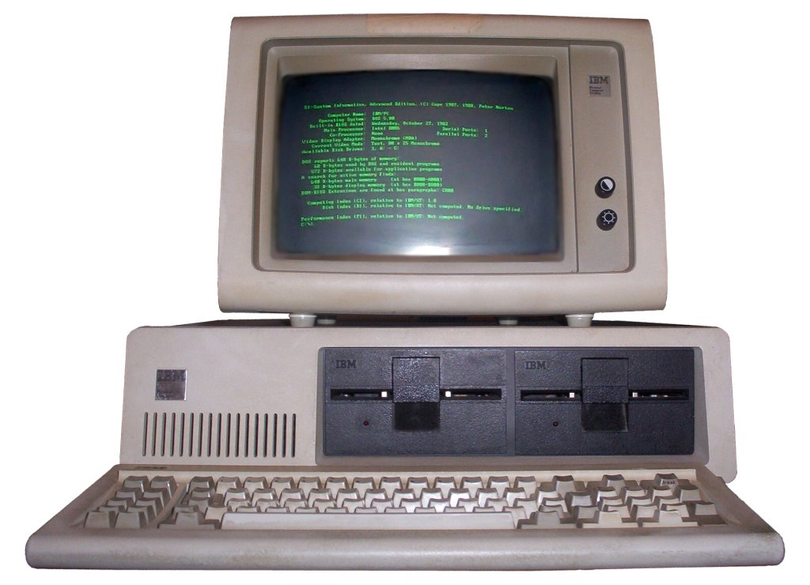

Computers - Day 2
Brady Isom
bradyisom@gmail.com
Overview
-
Day 1 (2 weeks ago)
- Requirements 3, 4 & 5
-
Homework (Should be done!)
- Requirements 6 & 7
-
Day 2 (today)
- Requirements 1, 2, 8 & 9
- Pass off
Slides are online at http://bradyisom.github.io/computermb-slides
Workbook is available at http://meritbadge.org/wiki/images/3/34/Computers.pdf
Pencils Ready?
Requirement #1
Discuss with your counselor the tips for online safety.
- Personal Information - Don’t give out personal information without your parents’ permission. This means you should not share your last name, home address, school name, or telephone number. Remember, just because someone asks for information about you does not mean you have to tell them anything about yourself!
- Passwords - Don’t share your password with anyone but your parents. When you use a public computer make sure you logout of the accounts you’ve accessed before leaving the terminal.
- Photos - Don’t post photos or videos online without getting your parents’ permission.
- Online Friends - Don’t agree to meet an online friend unless you have your parents’ permission. Unfortunately, sometimes people pretend to be people they aren't. Remember that not everything you read online is true.
Requirement #1 (cont.)
- Online Ads - Don’t buy anything online without talking to your parents first. Some ads may try to trick you by offering free things or telling you that you have won something as a way of collecting your personal information.
- Downloading - Talk to your parents before you open an email attachment or download software. Attachments sometimes contain viruses. Never open an attachment from someone you don’t know.
- Bullying - Don’t send or respond to mean or insulting messages. Tell your parents if you receive one. If something happens online that makes you feel uncomfortable, talk to your parents or to a teacher at school.
- Social Networking - Many social networking websites (e.g., Facebook, Twitter, Second Life and MySpace) and blog hosting websites have minimum age requirements to signup. These requirements are there to protect you!
Requirement #2a
Give a short history of the computer.
1. Abacus - Babylonia 2000 years ago
Requirement #2a (cont.)
2. Blaise Pascal 1642 - First digital computer. Simple calculator, or odometer.
Requirement #2a (cont.)
3. Tabulating machine with punch cards - 1890 - Herman Hollerith and James Powers

Requirement #2a (cont.)
4. IBM punch card reader
Requirement #2a (cont.)
5. 1942 - ENIAC
- Word = 10 digits
- Multiplied 2 numbers/words @ 300 per second
- 18,000 Vacuum tubes
- 1,800 sq. ft. of floor space
- 180,000 watts of power
Requirement #2a (cont.)
6. 1950's and 1960's - Magnetic Core Memory and the Transistor

Requirement #2a (cont.)
7. 1970's and 1980's - Personal Computers

Requirement #2b
Explain how the invention of the computer has affected society, science, and technology.
-
Instant information.
- No more going to the library for research.
- News and current events are instant.
- The world is a much smaller place.
-
Scientific calculations and simulations.
- Calculations and complex number crunching
- Much easier to run simulations and experiments
- Computers = Technology
Requirement #8a
Explain why copyright laws exist
- Media (music, movies, pictures, text) is easy to copy.
- Copyright laws protect the authors.
- Because software is just 1's and 0's, it's very easy to copy.
Requirement #8b
Explain why it is not permissible to accept a paid, copyrighted computer game or program from a friend unless the game or program is considered freeware or shareware. Explain the concepts of freeware and shareware.
- Freeware = Free software
- Shareware = Free to try, but paying is encouraged for continued use.
- Copies of software from friends that are not freeware or shareware are not legal unless you have paid for your own license.
Requirement #8c
Explain the restrictions and limitations of downloading music from the Internet
- Similar rules apply for music
- Most music must be paid for to download (iTunes, Amazon, etc.)
- Music is free only if explicitly stated
- File sharing sites are not legal if used to share copyrighted content.
- Streaming sites (Pandora, iTunes radio) are legal because the providers pay for the music.
Requirement #9
Find out about three career opportunities in the computer industry. Pick one and find out the education, training, and experience required for this profession. Discuss this with your counselor, and explain why this profession might interest you. Report what you learn to your counselor.
1. Programmer / Software Engineer
- Architect, write and maintain software.
- Usually at least a B.S. in Computer Science
- $50K - $100K+
Requirement #9 (cont.)
2. IT (Information Technology)
- Installing, maintaining computers and networks.
- Usually at least a B.S. in Information Technology
- $50K - $100K+
Requirement #9 (cont.)
3. Designer
- Visual design and interaction of software and web pages.
- No official pre-requisites. Skills are essential. College training is a plus.
- $30K - $65K
Pass Off
Computers - Day 2
Brady Isom
bradyisom@gmail.com
/